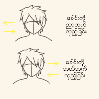

ေခါင္း ေလ့က်င့္ခန္း

ဦးေႏွာက္ႏွင့္ ဆိုင္တဲ့ ေရာဂါရွိသူေတြ၊ လည္ပင္း ဆိုင္ရာ ျပႆ နာရွိသူေတြ မျပဳလုပ္သင့္ပါ။
ေရွးဦးစြာ စိတ္ကို ေျဖေလ်ာ့ထားပါ။
အဆင့္ ၁
ပံုမွန္ အေနအထားကေန ေခါင္းကို ညာဘက္ကို လွည့္ပါ။
ညာဘက္ကို မ်က္ႏွာလွည့္ျခင္းကို ျဖည္းျဖည္း ျပဳလုပ္ပါ။
ျပီးရင္ မူလ အေနအထားကို ျပန္သြားပါ။
ညာဘက္ကိုခ်ည္း သံုးၾကိမ္ လွည့္ပါ။
ညာဘက္ျပီးေနာက္ ဘယ္ဘက္ကိုလဲ သံုးၾကိမ္ ျပဳလုပ္ေပးပါ။